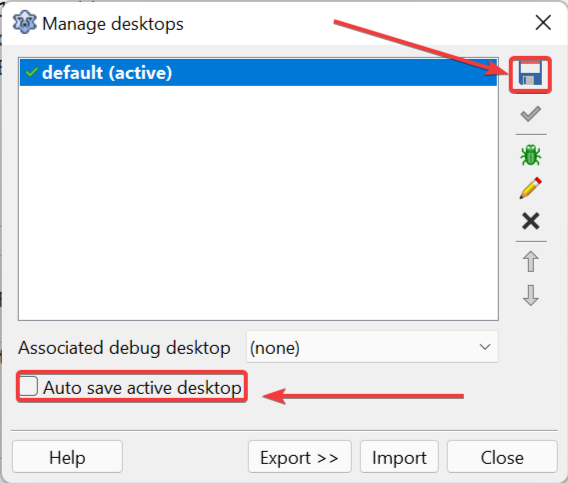

Ferramenta “Desktop” – O que é e como usar
Desktop, neste contexto, é a visão ou perspectiva do usuário ao utilizar a IDE. Refere-se à forma como os painéis foram "docados", a posição das janelas e os redimensionamentos efetuados — basicamente, o aspecto visual da sua área de trabalho no Lazarus.
Por padrão, o Lazarus salva seu desktop automaticamente toda vez que você fecha a IDE. Isso garante que, na próxima execução, tudo esteja exatamente onde você deixou. No entanto, se você desorganizar as janelas acidentalmente, essa bagunça será carregada novamente. Por isso, recomendo desativar o salvamento automático assim que possível.
Como configurar seu Desktop
Para ajustar essas configurações, acesse o menu: Tools | Desktop (Ferramentas | Área de Trabalho).

Siga estes passos recomendados:
- Clique em “Save active desktop as” (Salvar o desktop ativo como) e mantenha o nome do perfil como “default”.
- Nunca salve outro perfil por cima do default; ele servirá como sua configuração de segurança caso algo dê errado.
- Desmarque a opção “Auto save active desktop” para evitar que alterações acidentais sejam gravadas.
Quando você organizar a IDE da maneira que melhor atende ao seu fluxo de trabalho, salve o desktop com um nome personalizado e evite sobrepor perfis antigos.
Vídeo Demonstrativo
Se ainda tiver dúvidas sobre como gerenciar suas perspectivas visuais, assista ao vídeo:
🎥 Aprenda a configurar uma conexão na prática:
Assistir: IDE do Lazarus: Ferramenta "Desktop", o que é e como usar